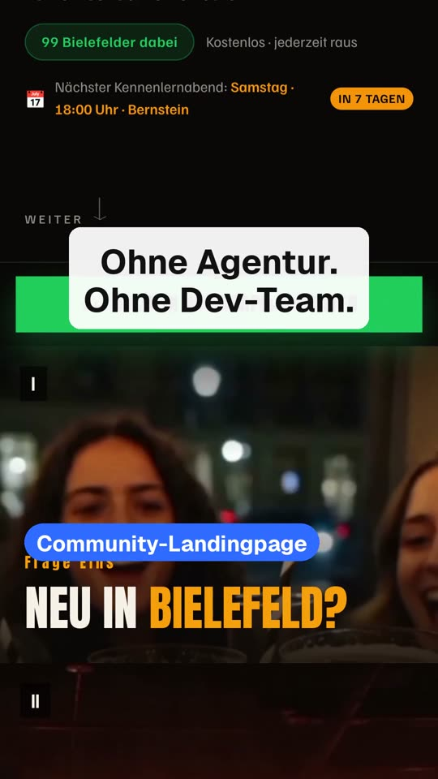
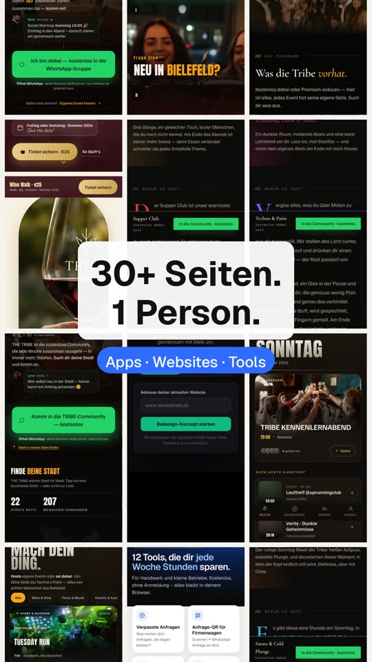
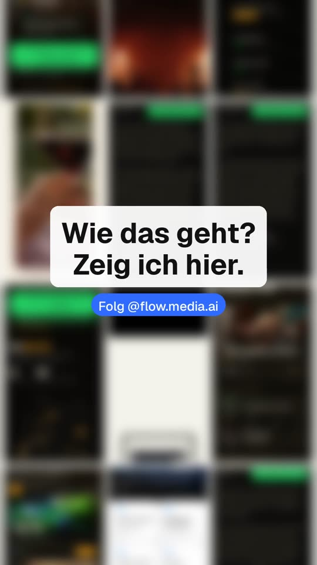

App & Community · Bielefeld und Münster
THE TRIBE
Eine Ausgeh-App mit Community: alle Events der Stadt an einem Ort, und Leute finden, die mitkommen. Mit Stadtpuls, Chat, Event-Seiten und WhatsApp-Community – entwickelt mit KI, ohne Entwicklerteam.
- Web-App
- Event-Seiten
- Community
Eigenes Tool
Flow Board
Weil mir Trello zu wenig war: Aufgaben-Board mit Prioritäten-Matrix, Wochenkalender mit Uhrzeiten, gebuchten Calendly-Terminen, Dateiablage und GitHub-Anbindung. Läuft auf Laptop und Handy.
- Board & Kalender
- Calendly
- Datenbank
Websites
30+ Seiten, eine Person
Landingpages, Event-Seiten mit Ticketverkauf, eine Agentur-Website, eine Sammlung kostenloser Tools für kleine Betriebe. Nicht alles perfekt – aber alles live.
- Landingpages
- Event-Seiten
- Tools
Automatisierung
Reels, die sich (fast) selbst bauen
Ein Autopilot, der täglich Zahlen auswertet, Reels baut, postet und aus den Ergebnissen lernt. Mit allen Fehlern, die dazugehören – darüber rede ich offen auf @flow.media.ai.
- Daten → Briefing → Reel
- Learnings


